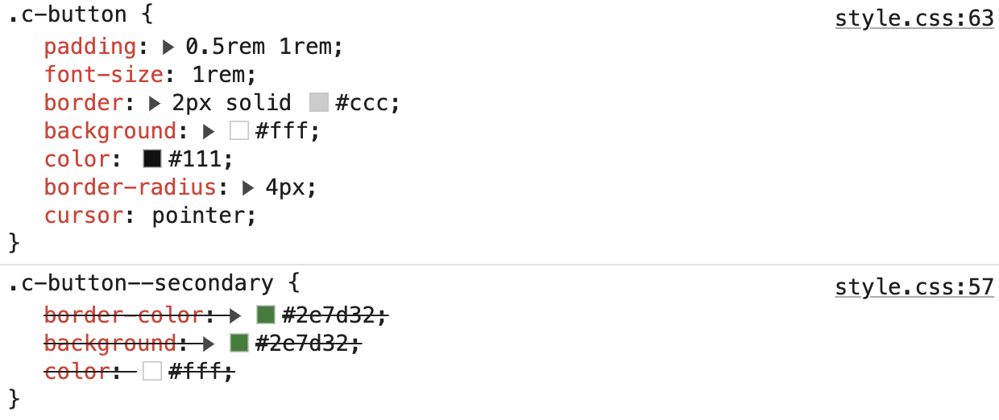

BEM: Cascade Order Matters
These buttons use BEM modifiers. All selectors have the same specificity, so the declaration order decides which style wins.
Buttons
.c-button--secondary is declared before
.c-button, so the base button styles override it.
Look at the CSS in the inspector to see the cascade in action.
